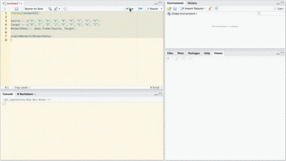

v0.2.13
Christopher Gandrud, JJ Allaire, & Kent Russell
2016-08-11
This is a port of Christopher Gandrud’s R package d3Network for creating D3 network graphs to the htmlwidgets framework. The htmlwidgets framework greatly simplifies the package’s syntax for exporting the graphs, improves integration with RStudio’s Viewer Pane, RMarkdown, and Shiny web apps. See below for examples.
It currently supports three types of network graphs:
Force directed networks with simpleNetwork and forceNetwork
Sankey diagrams with sankeyNetwork
Reingold-Tilford Tree graphs with treeNetwork
networkD3 works very well with the most recent version of RStudio (>=v0.99, download). When you use this version of RStudio, graphs will appear in the Viewer Pane. Not only does this give you a handy way of seeing and tweaking your graphs, but you can also export the graphs to the clipboard or a PNG/JPEG/TIFF/etc. file.
The package can be downloaded from CRAN.
For a full set of examples for each of the functions see this page.
Note: You are probably used to R’s 1-based numbering (i.e. counting in R starts from 1). However, networkD3 plots are created using JavaScript, which is 0-based. So, your data links will need to start from 0. See this data set for example. You can also use igraph to build your graph data and then use the igraph_to_networkD3 function to convert this data to a suitable object for networkD3 plotting.
> simpleNetwork
For very basic force directed network graphics you can use simpleNetwork. For example:
# Load package
library(networkD3)
# Create fake data
src <- c("A", "A", "A", "A",
"B", "B", "C", "C", "D")
target <- c("B", "C", "D", "J",
"E", "F", "G", "H", "I")
networkData <- data.frame(src, target)
# Plot
simpleNetwork(networkData)> forceNetwork
Use forceNetwork to have more control over the appearance of the forced directed network and to plot more complicated networks. Here is an example:
# Load data
data(MisLinks)
data(MisNodes)
# Plot
forceNetwork(Links = MisLinks, Nodes = MisNodes,
Source = "source", Target = "target",
Value = "value", NodeID = "name",
Group = "group", opacity = 0.8)From version 0.1.3 you can also allow scroll-wheel zooming by setting zoom = TRUE.
> sankeyNetwork
You can also create Sankey diagrams with sankeyNetwork. Here is an example using downloaded JSON data:
# Load energy projection data
# Load energy projection data
URL <- paste0(
"https://cdn.rawgit.com/christophergandrud/networkD3/",
"master/JSONdata/energy.json")
Energy <- jsonlite::fromJSON(URL)
# Plot
sankeyNetwork(Links = Energy$links, Nodes = Energy$nodes, Source = "source",
Target = "target", Value = "value", NodeID = "name",
units = "TWh", fontSize = 12, nodeWidth = 30)> radialNetwork
From version 0.2, tree diagrams can be created using radialNetwork or diagonalNetwork.
URL <- paste0(
"https://cdn.rawgit.com/christophergandrud/networkD3/",
"master/JSONdata/flare.json")
## Convert to list format
Flare <- jsonlite::fromJSON(URL, simplifyDataFrame = FALSE)
# Use subset of data for more readable diagram
Flare$children = Flare$children[1:3]
radialNetwork(List = Flare, fontSize = 10, opacity = 0.9)diagonalNetwork(List = Flare, fontSize = 10, opacity = 0.9)> dendroNetwork
From version 0.2, it is also possible to create dendrograms using dendroNetwork.
hc <- hclust(dist(USArrests), "ave")
dendroNetwork(hc, height = 600)You can use igraph to create network graph data that can be plotted with networkD3. The igraph_to_networkD3 function converts igraph graphs to lists that work well with networkD3. For example:
# Load igraph
library(igraph)
# Use igraph to make the graph and find membership
karate <- make_graph("Zachary")
wc <- cluster_walktrap(karate)
members <- membership(wc)
# Convert to object suitable for networkD3
karate_d3 <- igraph_to_networkD3(karate, group = members)
# Create force directed network plot
forceNetwork(Links = karate_d3$links, Nodes = karate_d3$nodes,
Source = 'source', Target = 'target',
NodeID = 'name', Group = 'group')Use saveNetwork to save a network to a stand alone HTML file:
library(magrittr)
simpleNetwork(networkData) %>%
saveNetwork(file = 'Net1.html')It is simple to include a networkD3 graphic in an RMarkdown file. Simply place the code to create the graph in a code chunk the same way you would any other plot. Checkout this simple example.
You can also easily include networkD3 graphs in Shiny web apps.
In the server.R file create the graph by placing the function inside of render*Network, where the * is either Simple, Force, or Sankey depending on the graph type. For example:
output$force <- renderForceNetwork({
forceNetwork(Links = MisLinks, Nodes = MisNodes,
Source = "source", Target = "target",
Value = "value", NodeID = "name",
Group = "group", opacity = input$opacity)
})In the shinyUI part of your app.R file (for single-file Shiny apps) include *NetworkOutput (with * as before, but starting with a lowercase letter). The argument placed in this function should be the element specified with output, e.g.:
forceNetworkOutput("force")You can run a simple example with the following code:
shiny::runGitHub('christophergandrud/networkD3-shiny-example')Full source code for this example can be found here.
You can use RStudio to save static images of networkD3 plots as PNG files. Simply create your plot as usual in RStudio. The output should appear in the Viewer pane. Then click Export > Save as Image…. A new window will appear. You can use this window to manipulate the plot, resize it, and save the result as a PNG file.


networkD3 is covered under the GPL-3 license.
This site is covered under a CC By-NC-SA 4.0 License.